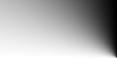
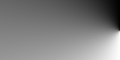

4.3. Conical Gradients
A conical gradient is created by first specifying the center of a gradient-circle
and then several colors placed along its circumference. The image is constructed by
creating an infinite canvas and painting it with rays rotated around a fixed
endpoint which is anchored at the center of the gradient-circle.
The color of the painted ray is the color of the gradient-circle
where the two intersect. This produces a smooth fade from each color to the next,
progressing clockwise. With color selections that significantly differ in lightness,
the visual result is reminiscent of a cone observed from above, hence the name "conical gradients".
4.3.1.
conical-gradient() syntax
<conical-gradient> = conical-gradient(
[ <position> , ]?
<color-stop-circular> [ , <color-stop-circular> ]+
)
The first argument to the function determines the center of the gradient. The
<position> notation is defined by
the positioning syntax of ‘background-position’
and is resolved in the same way, using the center-point as the subject
and the content box as the positioning area. [CSS21] [CSS3BG] If this argument is
omitted, it defaults to ‘center’.
Note that the CR of CSS3 B&B doesn't yet have a
definition of <position> - it's defined in the ED, and an update to
B&B is expected.
4.3.2.
Placing Color Stops
Color stops are placed across the circumference of a gradient-circle whose
center is anchored at the center of the gradient.
Its exact radius is not relevant, since every positive radius produces the same results.
In other words, there is an infinite number of suitable gradient-circles.
0deg points upwards, 90deg points toward the right, and positive angles go clockwise.
Percentages can also be used and they correspond to fractions of 1turn.
Locations before 0% (0deg) and after 100% (360deg) can be specified;
though out-of-range locations are never directly consulted for rendering,
they can affect the color of in-range locations on the gradient-circle through interpolation.
For example, conical-gradient(white, black 125%)
will produce the same result as conical-gradient(white, #333).
Are there enough use cases to warrant the complexity involved in generalizing
gradient-circle into a gradient-ellipse?
Should we allow the 0deg point to be customized?

This example illustrates visually how to calculate the placement of color stops on the
gradient-circle, as well as the gradient produced with ‘background:
conical-gradient(25% 30%, white, black 60%);’ as a background on a box that is
400px wide and 300px tall.
4.3.3.
Conical gradient examples
All of the following ‘conical-gradient()’ examples are presumed to be backgrounds applied
to a box that is 200px wide and 100px tall.
These examples demonstrate the basic syntax for conical gradients:
conical-gradient(yellow, #f06)
conical-gradient(center, yellow, #f06)
conical-gradient(50% 50%, yellow, #f06)
conical-gradient(yellow 0%, #f06 100%)
conical-gradient(yellow 0deg, #f06 360deg)
conical-gradient(yellow, #f06 1turn)

conical-gradient(#f06, yellow, #f06)
conical-gradient(#f06, yellow 50%, #f06)
conical-gradient(#f06, yellow 180deg, #f06)

conical-gradient(red, yellow, lime, aqua, blue, fuchsia, red)

These examples show a gradient originating from somewhere other than the center of the box:
conical-gradient(bottom right, white, black)
conical-gradient(bottom right, white 75%, black)

conical-gradient(right, white 50%, black)

Examples to add to section 4.3 (Repeating gradients)
repeating-conical-gradient(yellow, #f06 36deg, yellow 72deg)

repeating-conical-gradient(black, black 5%, #f06 5%, #f06 10%)
Conical gradients can be used for many different effects. In the following example,
a repeating conical gradient is used to produce a checkerboard background pattern:
<!DOCTYPE html>
<title>Checkerboard example</title>
<style>
html {
background-image: repeating-conical-gradient(black, black 90deg, white 90deg, white 180deg);
background-size: 100px 100px;
}
</style>
<body></body>
Here’s an example rendering:

4.4. Gradient Color Stops
4.4.2.
Circular Color Stops
<color-stop-circular> = <color> [ <percentage> | <angle> ]?
Should lengths also be allowed? If so, the radius of the gradient-circle needs to be specified
What should be here and what in 4.3.2?
Circular color stops are very similar to the linear color stops defined above.
However, unlike <color-stop>, circular color stops are placed along the circumference a gradient-circle,
which can be thought of as a circular gradient-line.
Angles are measured clockwise, starting from the topmost point in the gradient-circle.
Percentages refer to fractions of 1turn. Circular color stops are usually placed between 0 and 360 degrees,
but that's not required; a color stop can be placed at any angle and still affects the gradient through interpolation.